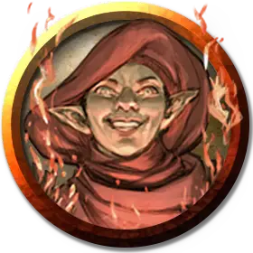

Ашанн
Ashann
Маленький Гуманоид (Чародей, Гном), хаотично-нейтральный, именной НИП

Класс Доспеха 12 (15 с доспехом мага)
Хиты 91 (14к8 + 28)
Скорость 25 футов
| мод | спас | ||
|---|---|---|---|
| СИЛ | 12 | +1 | +1 |
| ЛОВ | 15 | +2 | +2 |
| ТЕЛ | 14 | +2 | +2 |
| мод | спас | ||
|---|---|---|---|
| ИНТ | 16 | +3 | +3 |
| МДР | 15 | +2 | +5 |
| ХАР | 18 | +4 | +7 |
Навыки Восприятие +5, История +9, Магия +6, Обман +7, Скрытность +8
Сопротивление урону психическая энергия
Чувства тёмное зрение 60 футов, пассивное Восприятие 15
Языки Знает Общий и ещё два языка.
Опасность 6 (2300 опыта)
Бонус мастерства +3
Особенности
Гномья хитрость. Ашанн совершает с преимуществом спасброски Интеллекта, Мудрости и Харизмы от магии.
Действия
Мультиатака. Ашанн совершает две атаки Багровым снарядом.
Багровый снаряд. . Рукопашная или Дальнобойная атака заклинанием: +7 к попаданию, досягаемость 5 футов или дистанция 60 футов, одно существо. Попадание: 20 (3к10 + 4) урона психической энергией.
Использование заклинаний. Ашанн может накладывать следующие заклинания, используя Харизму в качестве базовой характеристики (Сл спасброска от заклинания 15):
• Неограниченно: малая иллюзия [minor illusion];
• 1/день каждое: доспехи мага [mage armor], образ [major image], воображаемая сила [phantasmal force].
Реакции
Отражение страданий. Когда Ашанн получает урон от существа находящегося в пределах 60 футов, существо должно совершить спасбросок Мудрости Сл 15, получая 16 (3к10) урона психической энергией в случае провала или половину этого урона при успехе.
Описание
Возносящие оккультисты углубляются в древние легенды и стремятся разгадать тайны, которые привели других исследователей к их гибели, движимые неутолимой жаждой познать неизвестное.
Оккультисты Алой Мечты
Консорциум Алой мечты рассматривается как эзотерическая, ориентированная на прибыль, но в конечном счете безвредная группа охотников за привидениями и продолжателей городских легенд. Это мнение не является неточным, но руководство общества одержимо одним видом легенд, в частности: теми, которые связаны с Луной Дурных Предзнаменований, Руидусом и древними фигурами, проклятыми воздействием ее инопланетного влияния.
Самые жестокие желания и пристрастия самых одержимых агентов общества усилились при контакте с предметами, зараженными руидием.